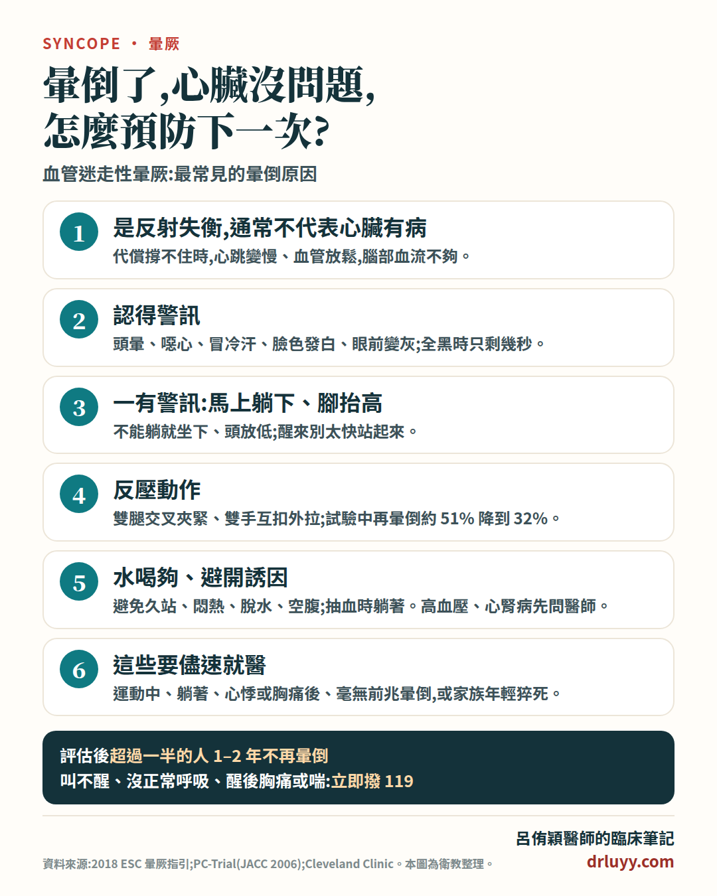

一句話重點:血管迷走性暈厥是最常見的暈倒原因,是身體調節血壓的反射「反應過度」,通常不代表心臟有病。預防下一次靠四件事:認得暈倒前的警訊 → 馬上躺下或坐下 → 做反壓動作 → 平常水喝夠、避開誘因。但如果是運動中、躺著、心悸後或毫無前兆就暈倒,要再找心臟科評估。
什麼是血管迷走性暈厥?
暈厥(syncope)就是醫學上的「暈倒」:腦部血流一時不夠,短暫失去意識,很快自己醒來。原因很多,其中最常見的就是血管迷走性暈厥,屬於「反射性暈厥」的一種。
- 很常見:歐洲心臟學會的衛教資料指出,大約每 4 個人就有 1 個一生中至少發生過一次血管迷走性暈厥;第一次發作常在青少年時期。40 歲以下的人暈倒,大多數是這一種。
- 通常發生在站著或坐著時,躺著發生很少見。
- 本身通常是良性的,主要的危險是倒下時撞傷。
為什麼會暈倒?一個「反應過度」的反射
我們的血壓和心跳,是由不用意識控制的自律神經自動調節。血管迷走性暈厥,就是其中一個反射反應太強、或在不對的時間出現。以最常見的「站久了暈倒」為例:
- 血往腳下積:站著的時候,血液因為重力積在下半身,回到心臟的血變少,每次心跳打出去的血也變少,血壓開始往下掉。
- 身體先努力撐住:正常的反射會讓心跳加快、血管收縮,把血壓撐住——所以暈倒前常覺得心跳變快。
- 代償不夠,反射「失衡」:如果代償撐不住,血壓會持續往下掉。接近暈倒時,讓心跳變慢的迷走神經作用常會突然增強,心跳從快變慢、有時甚至停幾秒;也可能同時收縮血管的交感作用減弱,血管放鬆。血壓因此一下子掉得更快。每個人兩者的比重不同。
- 腦部血流不夠,失去意識:人倒下、躺平後,血回到腦部,通常很快就醒過來。
看到血、打針、疼痛、強烈情緒這類誘因,則可能由大腦直接觸發同一個反射,不一定要先站很久。
為什麼這個反射會失衡?老實說,醫學上還沒有完全釐清。較常被引用的說法是:血量不足時心臟仍用力收縮,刺激心臟裡的感受器,反過來讓大腦踩剎車;但這個說法仍有爭議。比較確定的是:這類暈倒通常是血壓調節反射造成,不代表心臟結構有病;有沒有合併其他心臟問題,仍由醫師評估。
每個人反應的比重不同:有人以血壓掉為主,有人以心跳變慢、短暫停跳為主,也常兩者都有。
常見誘因
- 久站,尤其是悶熱、擁擠的地方(例如排隊、典禮、搭車)
- 看到血、針頭或醫療器械,抽血、打針時
- 疼痛、驚嚇、強烈情緒、緊張焦慮
- 脫水、疲勞、沒吃東西
- 相關的「情境性」反射暈厥,也可能由排尿、排便、劇烈咳嗽、運動結束後誘發(注意:是運動「後」,不是運動「中」)
- 會讓情況更容易發生的:喝酒、正在吃降血壓藥、天氣熱
暈倒前、暈倒時、醒來後的症狀
暈倒前的警訊(通常在暈倒前 30 到 60 秒)
- 頭暈、突然覺得很累或全身發熱
- 噁心、冒冷汗、臉色發白、打哈欠
- 眼前變灰、視野縮小(像隧道),聲音變遠
眼前全黑,通常只剩幾秒鐘——所以一出現前面的警訊,就要馬上行動(見下方「怎麼預防」)。
暈倒時
- 失去意識的時間通常不到 1 分鐘
- 眼睛可能張開上吊;可能短暫抽動幾下(通常少於 10 下),旁人常誤以為是癲癇
- 偶爾會尿失禁
醒來後
- 通常很快恢復清醒,但常覺得很累,也可能頭暈、噁心、冒汗、臉色蒼白、想上廁所
- 剛醒來太快站起來,容易再暈倒一次,要先躺著或坐著休息
怎麼預防下一次?
① 一有警訊:馬上躺下或坐下
最有效的做法,是躺下並把腳抬高,讓血回到腦部;沒辦法躺,就立刻坐下、頭放低。不要硬撐站著,也不要急著走去別的地方。醒來後先躺或坐 10 到 15 分鐘,再慢慢起來。
② 反壓動作:用肌肉把血「擠」回來
出現警訊、又沒辦法馬上躺下時,可以用力繃緊肌肉,把積在腿和手臂的血擠回心臟,撐住血壓:
雙腿交叉夾緊
站著把一腳交叉到另一腳前面,用力夾緊雙腿,同時繃緊大腿、臀部和肚子。
雙手互扣外拉
雙手手指彎曲互扣(一手掌心朝下、一手朝上),用力往兩邊拉。
用力握拳
用力握緊拳頭,或握一顆軟球。
一個 223 人的隨機試驗(PC-Trial)中,會辨認前兆的病人平均追蹤 14 個月:只接受一般衛教的人約 51% 再暈倒,加上反壓動作訓練的人約 32%。歐洲指引建議 60 歲以下、暈倒前有前兆的人使用;前兆太短或沒有前兆的人,來不及做。
③ 平常:水喝夠、鹽別刻意少吃
- 沒有被醫師限制喝水的人,每天約喝 2 公升,尿液保持淡黃色;天熱、運動、流汗多時更要補充。
- 鹽不要刻意吃得太淡。
- 有高血壓、心臟衰竭或腎臟病的人,喝水和吃鹽的量要先問醫師,不要自己大量補。
④ 避開誘因
- 避免久站、悶熱擁擠的環境;非站不可時,動一動腳、交替繃緊小腿。
- 從躺或坐起身時,慢慢來。
- 怕血、怕打針的人,抽血或打針時先告訴醫護人員,躺著做。
- 不要空腹太久,少喝酒。
- 排尿時容易暈的人(常是男性夜間起床),可以坐著小便;咳嗽會暈的人要把咳嗽治好。
⑤ 其他:由醫師評估
- 檢視藥物:正在吃降血壓藥、利尿劑的人(尤其長輩),可以請醫師評估是否需要調整。
- 彈性襪/彈性褲:有些人可以試試及腰的醫療級彈性褲。
- 藥物:反覆嚴重發作、上面方法都做了仍常暈倒的少數人,醫師可能考慮升血壓的藥物,效果有限,需要個別評估。
- 心律調節器:主要考慮於少數 40 歲以上、已記錄到心跳暫停、反覆嚴重暈倒且容易受傷的人,是最後的選擇。
好消息是:在醫師評估、了解自己的誘因之後,超過一半的人接下來 1 到 2 年不再暈倒,還會暈倒的人次數也明顯減少。
這些情況,不像單純的血管迷走性暈厥
出現下面任何一種,就不像單純的血管迷走性暈厥:如果這次是在運動中、躺著,或突然心悸、胸痛後暈倒,請儘速到急診評估;合併胸痛、喘、還沒完全恢復,立即撥 119。其他情況也要找心臟科進一步檢查(可能需要心電圖、心臟超音波、長時間心電圖等):
- 運動「中」暈倒(包括游泳)
- 躺著或睡覺時暈倒
- 暈倒前心悸、心跳亂跳,或胸痛
- 完全沒有前兆就突然倒下
- 家族中有人年輕時不明原因猝死
- 本身有心臟病,或心電圖異常
旁邊有人暈倒,怎麼幫忙?
- 叫叫看、看他有沒有正常呼吸。叫不醒就立刻撥 119;沒有正常呼吸或只有喘息,立即開始 CPR 並找 AED,不要等。
- 有正常呼吸但還沒醒、也沒有明顯外傷:讓他側躺(復甦姿勢),持續觀察。
- 已經醒來的人:讓他躺平、把腳抬高,或坐著把頭放低,休息 10 到 15 分鐘,不要急著扶他站起來。
- 完全清醒、能正常吞嚥後,才給他喝水。
留言與回饋
歡迎在下方留下你的想法或問題，留言經審核後才會公開顯示。提醒：本區不提供個別診療，個人病情請就醫或掛號諮詢。